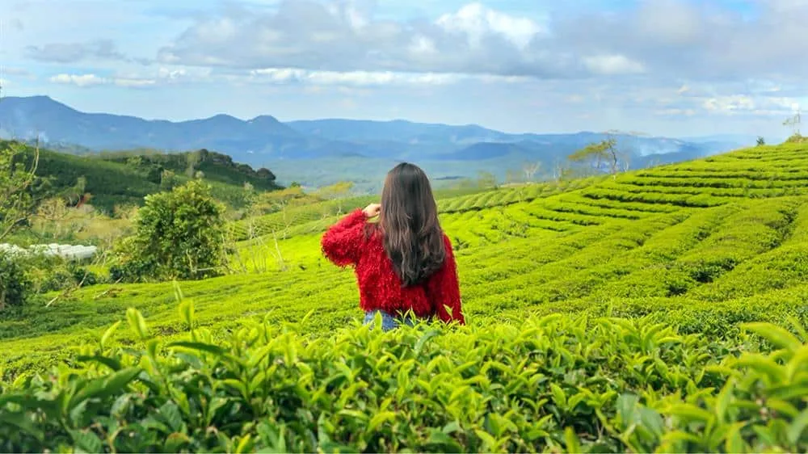
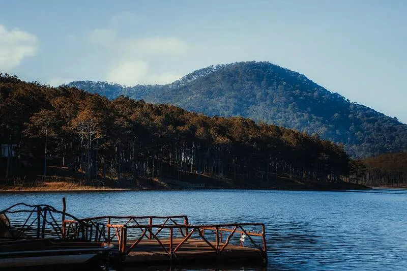
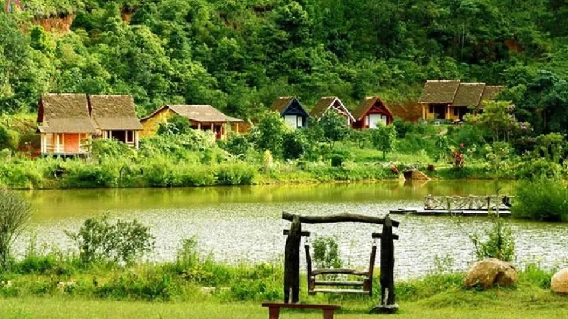

Địa điểm nổi tiếng ở Đà Lạt Năm 2025

Mục lục bài viết
Đà Lạt – thành phố của những giấc mơ với khí hậu mát mẻ quanh năm, khung cảnh thiên nhiên tuyệt đẹp và bầu không khí yên bình. Đây là điểm đến lý tưởng cho những ai muốn tận hưởng kỳ nghỉ thư giãn hoặc khám phá những địa danh độc đáo. Dưới đây là danh sách những địa điểm nổi tiếng tại Đà Lạt mà bạn không thể bỏ qua.
1. Hồ Xuân Hương – Biểu tượng của Đà Lạt

🌊 Đặc điểm nổi bật:
Hồ Xuân Hương nằm ngay trung tâm thành phố, là điểm đến quen thuộc của cả du khách và người dân địa phương. Với làn nước trong xanh, những rặng thông bao quanh và không khí trong lành, đây là nơi lý tưởng để tản bộ, đạp xe hoặc đơn giản là ngồi ngắm hoàng hôn.
🍵 Hoạt động thú vị:
Thưởng thức cà phê sáng tại các quán ven hồ.
Đạp xe đôi quanh hồ để cảm nhận vẻ đẹp yên bình.
Ghé thăm vườn hoa thành phố gần đó để chụp ảnh và chiêm ngưỡng hàng ngàn loài hoa rực rỡ.
2. Thung Lũng Tình Yêu – Điểm đến lãng mạn

💖 Điểm đặc biệt:
Nằm cách trung tâm thành phố khoảng 5 km, Thung Lũng Tình Yêu là nơi hội tụ của cảnh quan thiên nhiên thơ mộng với hồ nước, rừng thông và các công trình nhân tạo độc đáo.
📸 Lý tưởng cho:
Các cặp đôi muốn lưu giữ những bức ảnh kỷ niệm.
Đi dạo, chèo thuyền trên hồ hoặc thử sức với các trò chơi team building.
3. Dinh Bảo Đại – Kiến trúc cổ kính

🏛️ Giới thiệu:
Dinh Bảo Đại là nơi ở và làm việc của vua Bảo Đại – vị vua cuối cùng của triều đại nhà Nguyễn. Với thiết kế kiểu Pháp kết hợp với kiến trúc Việt Nam, dinh thự này mang đến cảm giác vừa cổ kính, vừa trang nhã.
🎨 Trải nghiệm:
Tham quan các phòng làm việc, phòng ngủ và phòng khách của vua.
Chụp ảnh với trang phục hoàng gia để cảm nhận không khí hoàng tộc.
4. Ga Đà Lạt – Ga tàu cổ nhất Việt Nam

🚂 Điểm đặc biệt:
Ga Đà Lạt được xây dựng từ thời Pháp thuộc và là một trong những nhà ga cổ nhất Đông Dương. Với thiết kế độc đáo và không gian hoài cổ, đây là nơi yêu thích của những ai đam mê chụp ảnh.
🌄 Hoạt động:
Trải nghiệm tuyến tàu đi Trại Mát, ngắm nhìn phong cảnh yên bình.
Chụp ảnh tại những toa tàu cổ kính và khu vực sân ga.
5. Chợ đêm Đà Lạt – Thiên đường ẩm thực

🌟 Điểm đến không thể bỏ lỡ:
Chợ đêm Đà Lạt là nơi du khách có thể thưởng thức những món ăn ngon và khám phá cuộc sống về đêm tại thành phố mộng mơ.
🍢 Món ngon nổi bật:
Bánh tráng nướng, sữa đậu nành nóng.
Kem bơ, nem nướng.
Các loại trái cây sấy và đặc sản Đà Lạt.
🛍️ Lưu ý:
Đừng quên mua vài món đồ lưu niệm hoặc đặc sản như mứt, trà atiso về làm quà.
6. Đường Hầm Đất Sét – Công trình độc đáo
🏺 Mô tả:
Đường Hầm Đất Sét nằm giữa rừng thông bạt ngàn, tái hiện lịch sử và văn hóa Đà Lạt qua những bức tượng điêu khắc bằng đất đỏ bazan. Đây là điểm đến thú vị để tìm hiểu về vùng đất và con người nơi đây.
🎯 Điểm nhấn:
Các tác phẩm nghệ thuật mô phỏng cảnh vật Đà Lạt.
Hồ Vô Cực – nơi check-in nổi tiếng với hai bức tượng khổng lồ.
7. Cao nguyên chè Cầu Đất – Vẻ đẹp xanh mướt

🌿 Đặc điểm:
Cách trung tâm thành phố khoảng 25 km, đồi chè Cầu Đất là nơi lý tưởng để hòa mình vào thiên nhiên. Với những đồi chè bạt ngàn và không khí mát lạnh, đây là điểm đến hoàn hảo cho các tín đồ “sống ảo”.
📷 Hoạt động:
Check-in với khung cảnh đồi chè xanh mướt.
Thưởng thức trà tại quán cà phê nhỏ nằm giữa đồi chè.
8. Tiệm Nướng & Chill Xóm Lèo – Địa điểm ẩm thực nổi bật
 Ảnh: Đà Lạt
Ảnh: Đà Lạt
🍖 Giới thiệu:
Tiệm Nướng & Chill Xóm Lèo là nơi lý tưởng để bạn thưởng thức các món nướng hấp dẫn trong không gian ấm cúng.

📍 Thông tin quán:
Địa chỉ: 113 Huỳnh Tấn Phát, Phường 11, Đà Lạt.
Inbox: https://m.me/nuongxomleo.
Google Map: https://maps.app.goo.gl/W4ygihLS8LQ1YiSK8.
🎉 Điểm đặc biệt:
Không chỉ có thực đơn phong phú, quán còn mang đến không gian thân thiện, ấm áp, rất thích hợp để tụ họp bạn bè hoặc gia đình.
9. Hồ Tuyền Lâm – Không gian tĩnh lặng

🌅 Mô tả:
Hồ Tuyền Lâm là hồ nước ngọt lớn nhất Đà Lạt, nằm giữa những ngọn đồi và rừng thông xanh mát. Đây là nơi lý tưởng để tận hưởng không khí trong lành và tham gia các hoạt động thú vị.
🛶 Hoạt động:
Chèo thuyền kayak hoặc đạp vịt.
Cắm trại bên bờ hồ để tận hưởng cảnh hoàng hôn lãng mạn.
10. Làng Cù Lần – Không gian làng quê yên bình

🌳 Điểm đến:
Làng Cù Lần là một ngôi làng nhỏ nằm giữa rừng thông, nổi bật với cảnh quan thiên nhiên hoang sơ và các hoạt động trải nghiệm thú vị.
🛤️ Hoạt động:
Tìm hiểu văn hóa địa phương.
Thử sức với các trò chơi như chèo thuyền, đua xe địa hình.
Đà Lạt là nơi hội tụ của cảnh sắc thiên nhiên, văn hóa và ẩm thực phong phú. Dù là lần đầu đến hay đã ghé thăm nhiều lần, thành phố này vẫn luôn mang đến những trải nghiệm thú vị và mới mẻ. Đừng quên ghé qua các địa điểm nổi tiếng trên, và đặc biệt là thưởng thức bữa ăn ngon tại Tiệm Nướng & Chill Xóm Lèo để chuyến đi của bạn thêm trọn vẹn! 🌸